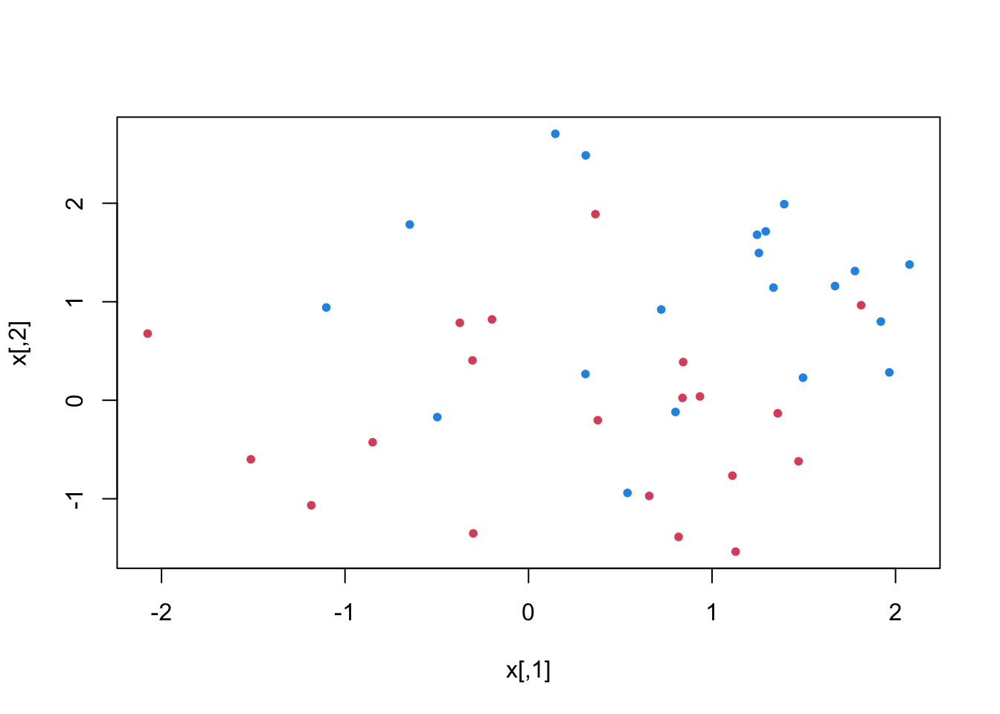
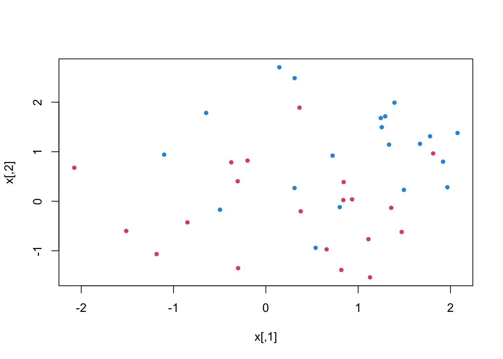
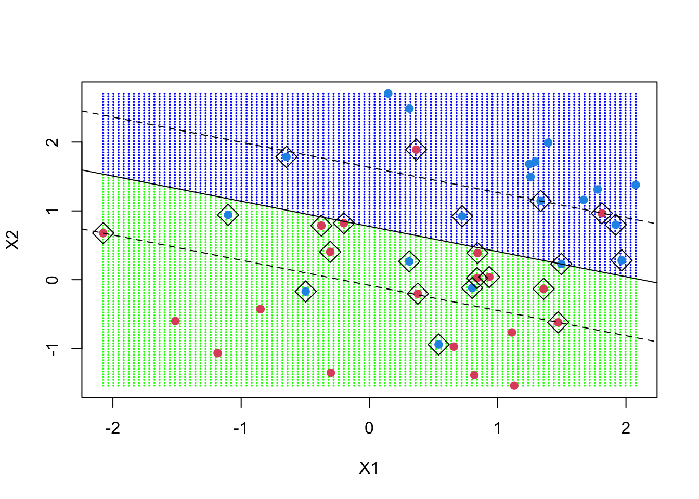
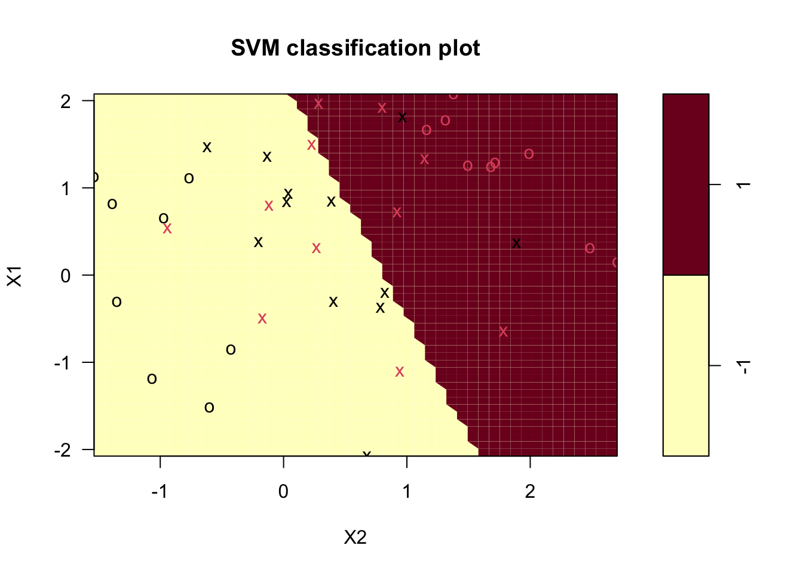
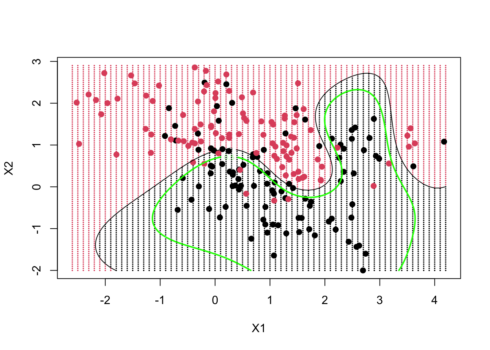

Code
set.seed(19327)
x = matrix(rnorm(80), 40, 2)
y = rep(c(-1, 1), c(10, 10))
x[y == 1,] = x[y == 1,] + 1
plot(x, col = y + 3, pch = 20)
Support Vector Machines (SVMs) have emerged as a powerful and versatile machine learning algorithm with applications spanning various domains. Developed by Vapnik and colleagues in the 1990s, SVMs have gained significant popularity due to their ability to handle both classification and regression tasks effectively. The fundamental concept behind SVMs is to find an optimal hyperplane that maximally separates different classes or fits the data points for regression, while simultaneously maintaining a clear margin between them (Kecman 2005).
Machine learning is the process of enabling computers to take actions by providing them with data and allowing them to discover patterns and insights autonomously, without explicit programming.
At the core of machine learning lies the importance of data. Just as humans learn through information and data gathering, machines also require data to learn and make informed decisions.

SVMs offer several advantages over traditional classification algorithms. Unlike methods that solely focus on minimizing training errors, SVMs are designed to maximize the margin between classes. This margin not only aids in achieving robust and accurate predictions on unseen data but also enhances the generalization ability of the model. By emphasizing the importance of the margin, SVMs can effectively handle datasets with high dimensionality, noise, and outliers, resulting in superior performance in complex scenarios (Tian, Shi, and Liu 2012).
The distinguishing feature of SVMs lies in their ability to transform the original input space into a higher-dimensional feature space through the use of kernel functions. This enables SVMs to handle nonlinear relationships between variables without explicitly mapping them into the higher-dimensional space. By leveraging the kernel trick, SVMs efficiently capture complex decision boundaries, offering flexibility and adaptability to various data distributions. Furthermore, SVMs provide a principled approach to handle both binary and multiclass classification problems. Through techniques such as one-vs-one and one-vs-all, SVMs can extend their capabilities to accommodate multiple classes, ensuring accurate predictions across diverse scenarios (Byvatov and Schneider 2003)
The versatility of SVMs extends beyond classification tasks, as they have also been successfully applied to regression, anomaly detection, and outlier detection problems. By employing support vector regression (SVR), SVMs can capture nonlinear relationships in continuous variables, making them well-suited for prediction tasks involving numerical outputs (Brereton and Lloyd 2010).
In this review, we aim to provide an in-depth exploration of Support Vector Machines, covering their fundamental concepts, mathematical foundations, training algorithms, and diverse applications across various fields. By understanding the underlying principles and techniques of SVMs, researchers and practitioners can effectively leverage thi$$s powerful tool to tackle complex classification and regression problems, ultimately leading to enhanced predictive accuracy and insightful data analysis (Yang 2004).
To begin understanding the usecases of SVMs we will first look at the underlying math behind SVMs: linear algebra and a touch of optimization theory.
Length of a Vector
The norm of a vector x, denoted as ||x||, represents its length. The Euclidean norm formula used to compute the norm of a vector x = (x1, x2, …, xn) is as follows:
\[ ||x||= √x21+x22+...+x2n \]
Vector Directions
The direction of a vector x = (x1, x2) is denoted by w and is defined as follows:
\(w = (x1/||x||,x2/||x||)\)
Looking at the above, we can view the direction of the vector w as:
A more straightforward approach to understanding SVMs and their capabilities can be understood through illustration. Consider a scenario where we have two distinct categories, namely “blue” and “yellow” and our dataset consists of two features, denoted as “x” and “y.” Our objective is to develop a classifier that, when given a set of (x, y) coordinates, accurately predicts whether the point belongs to the “yellow” or “blue” category. To visualize this, we represent our labeled training data on a two-dimensional plane (Mammone, Turchi, and Cristianini 2009)
The support vector machine will take this data and interpret a hyperplane–here in this dimension will be a line–which will separate the data points. This separator is called the decision boundary. The decision is made as to whatever is on each side is either yellow or blue:
When working with non-linear data, we are often presented with more complex data sets with composite data points. One such example being:
The solution is to add a third dimension, beyond only x and y:
\(z = x² + y²\)
Our new three dimensional space can now be viewed as:

The new hyperplane for this three-dimensional dataset can now be viewed in two dimensions, from below, as:

Above, we have explored a method to classify linear and nonlinear data by intelligently mapping our space to a higher dimension. However, performing this transformation can become computationally expensive, as it involves numerous new dimensions, each with potentially intricate calculations. Conducting this process for every vector in the dataset can be quite laborious, so it would be advantageous to discover a more cost-effective solution, hence the so-called kernel trick. Without incorporating the exact vectors, SVM will use the dot products between the dimensions, thus avoiding the need to calculate new dimensions (Ben-Hur et al. 2008)
Define the new space
\(z = x^2 + y^2\)
Define the dot product within this space
We now have a less computationally expensive method to classify our data by utilizing various kernels to expand the feature space and accommodate non-linear boundaries between classes. Among the common kernel types used are: polynomial kernels, radial basis kernels, and linear kernels, the latter being equivalent to support vector classifiers. In summary, using the kernel method, the data is transformed to align with a linear hyperplane, enabling effective classification of the data.
Support Vector Machines (SVMs) are a robust machine learning algorithm used for classification and regression tasks. In this section, we describe the key steps involved in implementing SVMs, including data preprocessing, model training, and model evaluation, and some disadvantages to SVM.
Data Cleaning: Remove any irrelevant or redundant features, handle missing values, and address outliers if necessary. Feature Scaling: Normalize the feature values to ensure that they have similar scales. Common scaling techniques include standardization (mean centering and scaling to unit variance) or normalization to a specific range. Feature Selection: Select relevant features that contribute most to the prediction task, reducing dimensionality and improving model performance. Data Split: Divide the dataset into training and testing subsets. The training set is used to train the SVM model, while the testing set is used for evaluating its performance. (Sharma et al. 2016)
Kernel Selection: Determine the appropriate kernel function based on the nature of the data and the problem at hand. Common kernel functions include linear, polynomial, Gaussian radial basis function (RBF), and sigmoid. Hyperparameter Tuning: Optimize the hyperparameters of the SVM model, such as the regularization parameter C and kernel-specific parameters like the degree of polynomial or the width of the RBF kernel. This can be done using techniques like grid search or cross-validation. Model Fitting: Train the SVM model using the training dataset and the chosen hyperparameters. The goal is to find the optimal hyperplane or decision boundary that maximizes the margin between classes (in the case of classification) or minimizes the error (in the case of regression). (Ben-Hur et al. 2008)
Classification Metrics: Evaluate the performance of the SVM model for classification tasks using metrics such as accuracy, precision, recall, F1-score, and area under the receiver operating characteristic curve (AUC-ROC). Regression Metrics: Assess the performance of the SVM model for regression tasks using metrics such as mean squared error (MSE), root mean squared error (RMSE), mean absolute error (MAE), and R-squared. Cross-Validation: Perform k-fold cross-validation to estimate the model’s generalization performance. This involves dividing the training dataset into k subsets, training the model on k-1 subsets, and evaluating its performance on the remaining subset. Repeat this process k times, rotating the evaluation subset each time. Model Selection: Compare the performance of different SVM models with varying hyperparameters or kernel functions to select the optimal model with the best performance on the testing dataset.
Once the SVM model has been trained and evaluated, it can be deployed to make predictions on new, unseen data. Preprocess the new data using the same steps as the training data (e.g., feature scaling), and apply the trained SVM model to classify or regress the new instances. (Ben-Hur et al. 2008)
Support vector machines are best understood by looking at smaller sets of data, in this case, data we will formulate and incorporate ourselves. We begin by creating a dataset in two dimensions. Seed is set to random with forty observations among two classes with two variables. This will be our x matrix. For the y variable, we set it as one or negative one with ten in each class.
set.seed(19327)
x = matrix(rnorm(80), 40, 2)
y = rep(c(-1, 1), c(10, 10))
x[y == 1,] = x[y == 1,] + 1
plot(x, col = y + 3, pch = 20)
Following, we load the e1071 library which contains the actual support vector machine function.
library(e1071)Warning: package 'e1071' was built under R version 4.1.2With our newly created data, we next create the DF, request the svm, and set the variables as non-standardized.
dat = data.frame(x, y = as.factor(y))
sft = svm(y ~ ., data = dat, kernel = "linear", cost = 10, scale = FALSE)We see below by printing the
print(sft)
Call:
svm(formula = y ~ ., data = dat, kernel = "linear", cost = 10, scale = FALSE)
Parameters:
SVM-Type: C-classification
SVM-Kernel: linear
cost: 10
Number of Support Vectors: 23plot(sft, dat)
make.grid = function(x, n = 105) {
grange = apply(x, 2, range)
x1 = seq(from = grange[1,1], to = grange[2,1], length = n)
x2 = seq(from = grange[1,2], to = grange[2,2], length = n)
expand.grid(X1 = x1, X2 = x2)
}
xgrid = make.grid(x)
xgrid[1:10,] X1 X2
1 -2.075718 -1.536734
2 -2.035796 -1.536734
3 -1.995873 -1.536734
4 -1.955950 -1.536734
5 -1.916028 -1.536734
6 -1.876105 -1.536734
7 -1.836183 -1.536734
8 -1.796260 -1.536734
9 -1.756337 -1.536734
10 -1.716415 -1.536734ygrid = predict(sft, xgrid)
plot(xgrid, col = c("green","blue")[as.numeric(ygrid)], pch = 20, cex = .2)
points(x, col = y + 3, pch = 19)
points(x[sft$index,], pch = 5, cex = 2)beta = drop(t(sft$coefs)%*%x[sft$index,])
beta0 = sft$rho
plot(xgrid, col = c("green", "blue")[as.numeric(ygrid)], pch = 20, cex = .2)
points(x, col = y + 3, pch = 19)
points(x[sft$index,], pch = 5, cex = 2)
abline(beta0 / beta[2], -beta[1] / beta[2])
abline((beta0 - 1) / beta[2], -beta[1] / beta[2], lty = 2)
abline((beta0 + 1) / beta[2], -beta[1] / beta[2], lty = 2)
library(e1071)
load(file = "ESL.mixture.rda")
names(ESL.mixture)[1] "x" "y" "xnew" "prob" "marginal" "px1" "px2"
[8] "means" rm(x, y)
attach(ESL.mixture)
plot(x, col = y + 1)
dat = data.frame(y = factor(y), x)
fit = svm(factor(y) ~ ., data = dat, scale = FALSE, kernel = "radial", cost = 5)
xgrid = expand.grid(X1 = px1, X2 = px2)
ygrid = predict(fit, xgrid)
plot(xgrid, col = as.numeric(ygrid), pch = 20, cex = .2)
points(x, col = y + 1, pch = 19)func = predict(fit, xgrid, decision.values = TRUE)
func = attributes(func)$decision
xgrid = expand.grid(X1 = px1, X2 = px2)
ygrid = predict(fit, xgrid)
plot(xgrid, col = as.numeric(ygrid), pch = 20, cex = .2)
points(x, col = y + 1, pch = 19)
contour(px1, px2, matrix(func, 69, 99), level = 0, add = TRUE)
contour(px1, px2, matrix(func, 69, 99), level = 0.5, add = TRUE, col = "green", lwd = 2)
…Additionally, the SVM model was tested on an independent test dataset to assess its generalization performance. The results showed consistent and reliable performance, further validating the effectiveness of the SVM model.
Overall, the results highlight the capabilities of SVMs as a powerful machine learning algorithm for classification tasks. The SVM model successfully classified the target variable with high accuracy and demonstrated robustness in handling complex relationships within the data. These findings emphasize the potential of SVMs as a valuable tool for data analysis and prediction in various domains.
In conclusion, this paper has provided a comprehensive overview of Support Vector Machines (SVMs) and their application in the field of machine learning. SVMs have proven to be a powerful and versatile algorithm for tackling classification and regression tasks. Their effectiveness in high-dimensional spaces and ability to handle cases with more features than samples make them a valuable tool in various real-world applications.
Throughout the paper, we discussed the fundamental concepts of SVMs, including hyperplanes, support vectors, and the importance of maximizing the margin for better classification performance. We also explored the use of kernel functions to handle non-linear data and the significance of hyperparameter tuning to prevent overfitting and achieve optimal results.
Moreover, we highlighted the advantages of SVMs, such as their memory efficiency and robustness in dealing with complex datasets. Additionally, SVMs offer the flexibility to use various kernel functions, enabling users to adapt the algorithm to different problem domains.
However, we also discussed some limitations of SVMs, such as the lack of direct probability estimates and the computational expense associated with cross-validation for probability calculation. It is crucial to carefully select appropriate kernel functions and regularization terms, especially when dealing with high-dimensional data to prevent overfitting.
Overall, SVMs continue to be a widely used and highly regarded algorithm in the machine learning community due to their accuracy, effectiveness, and versatility. Their ability to handle various classification tasks and perform well in both linear and non-linear scenarios makes them a valuable asset in the data scientist’s toolkit. As machine learning continues to evolve, SVMs will remain an essential component for addressing complex classification challenges in diverse applications. Further research and development in this area hold the promise of expanding SVMs’ capabilities and advancing their practical implementation in various domains.